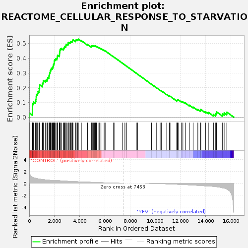
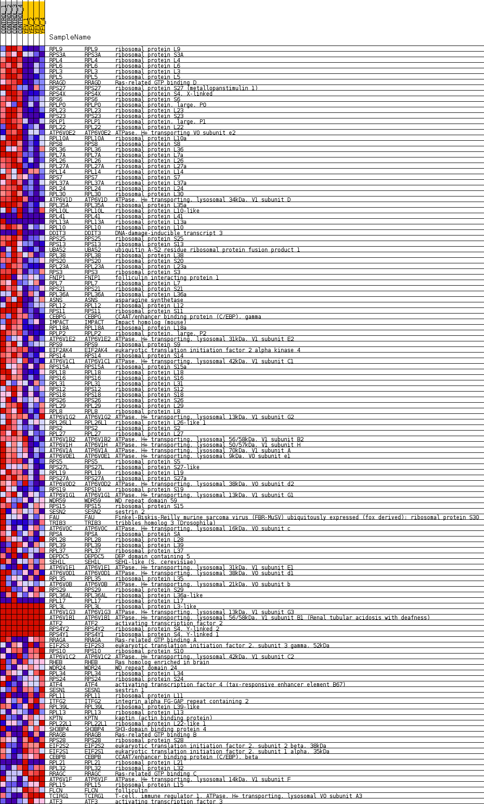
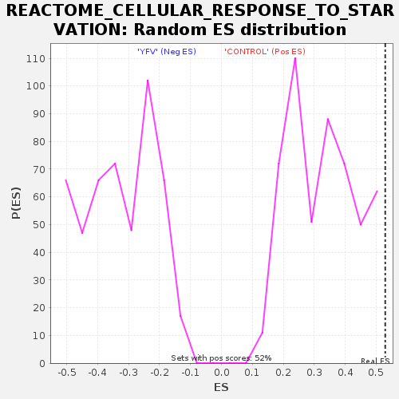

| Dataset | MATRIZ_GSE99081_collapsed_to_symbols.gsea_CLASE_99081.cls#CONTROL_versus_YFV |
| Phenotype | gsea_CLASE_99081.cls#CONTROL_versus_YFV |
| Upregulated in class | CONTROL |
| GeneSet | REACTOME_CELLULAR_RESPONSE_TO_STARVATION |
| Enrichment Score (ES) | 0.5292054 |
| Normalized Enrichment Score (NES) | 1.6075885 |
| Nominal p-value | 0.0 |
| FDR q-value | 1.0 |
| FWER p-Value | 0.9 |

| SYMBOL | TITLE | RANK IN GENE LIST | RANK METRIC SCORE | RUNNING ES | CORE ENRICHMENT | |
|---|---|---|---|---|---|---|
| 1 | RPL9 | ribosomal protein L9 | 39 | 1.536 | 0.0271 | Yes |
| 2 | RPS3A | ribosomal protein S3A | 243 | 1.002 | 0.0337 | Yes |
| 3 | RPL4 | ribosomal protein L4 | 245 | 1.000 | 0.0529 | Yes |
| 4 | RPL6 | ribosomal protein L6 | 258 | 0.994 | 0.0712 | Yes |
| 5 | RPL3 | ribosomal protein L3 | 271 | 0.979 | 0.0893 | Yes |
| 6 | RPL5 | ribosomal protein L5 | 331 | 0.928 | 0.1034 | Yes |
| 7 | RRAGD | Ras-related GTP binding D | 487 | 0.840 | 0.1099 | Yes |
| 8 | RPS27 | ribosomal protein S27 (metallopanstimulin 1) | 531 | 0.815 | 0.1229 | Yes |
| 9 | RPS4X | ribosomal protein S4, X-linked | 540 | 0.811 | 0.1380 | Yes |
| 10 | RPS6 | ribosomal protein S6 | 556 | 0.801 | 0.1524 | Yes |
| 11 | RPLP0 | ribosomal protein, large, P0 | 638 | 0.765 | 0.1621 | Yes |
| 12 | RPL23 | ribosomal protein L23 | 694 | 0.744 | 0.1729 | Yes |
| 13 | RPS23 | ribosomal protein S23 | 783 | 0.708 | 0.1811 | Yes |
| 14 | RPLP1 | ribosomal protein, large, P1 | 785 | 0.707 | 0.1946 | Yes |
| 15 | RPL22 | ribosomal protein L22 | 823 | 0.695 | 0.2056 | Yes |
| 16 | ATP6V0E2 | ATPase, H+ transporting V0 subunit e2 | 826 | 0.695 | 0.2189 | Yes |
| 17 | RPL10A | ribosomal protein L10a | 1031 | 0.636 | 0.2184 | Yes |
| 18 | RPS8 | ribosomal protein S8 | 1045 | 0.631 | 0.2297 | Yes |
| 19 | RPL36 | ribosomal protein L36 | 1103 | 0.618 | 0.2380 | Yes |
| 20 | RPL7A | ribosomal protein L7a | 1114 | 0.617 | 0.2493 | Yes |
| 21 | RPL26 | ribosomal protein L26 | 1288 | 0.575 | 0.2496 | Yes |
| 22 | RPL27A | ribosomal protein L27a | 1398 | 0.551 | 0.2534 | Yes |
| 23 | RPL14 | ribosomal protein L14 | 1446 | 0.539 | 0.2608 | Yes |
| 24 | RPS7 | ribosomal protein S7 | 1477 | 0.534 | 0.2692 | Yes |
| 25 | RPL37A | ribosomal protein L37a | 1562 | 0.517 | 0.2739 | Yes |
| 26 | RPL24 | ribosomal protein L24 | 1574 | 0.514 | 0.2831 | Yes |
| 27 | RPL30 | ribosomal protein L30 | 1608 | 0.507 | 0.2908 | Yes |
| 28 | ATP6V1D | ATPase, H+ transporting, lysosomal 34kDa, V1 subunit D | 1616 | 0.506 | 0.3001 | Yes |
| 29 | RPL35A | ribosomal protein L35a | 1658 | 0.502 | 0.3072 | Yes |
| 30 | RPL10L | ribosomal protein L10-like | 1670 | 0.501 | 0.3161 | Yes |
| 31 | RPL41 | ribosomal protein L41 | 1720 | 0.500 | 0.3227 | Yes |
| 32 | RPL13A | ribosomal protein L13a | 1740 | 0.500 | 0.3311 | Yes |
| 33 | RPL10 | ribosomal protein L10 | 1836 | 0.500 | 0.3348 | Yes |
| 34 | DDIT3 | DNA-damage-inducible transcript 3 | 1877 | 0.498 | 0.3419 | Yes |
| 35 | RPS25 | ribosomal protein S25 | 1908 | 0.495 | 0.3495 | Yes |
| 36 | RPS13 | ribosomal protein S13 | 1927 | 0.494 | 0.3579 | Yes |
| 37 | UBA52 | ubiquitin A-52 residue ribosomal protein fusion product 1 | 1969 | 0.488 | 0.3647 | Yes |
| 38 | RPL38 | ribosomal protein L38 | 1981 | 0.487 | 0.3734 | Yes |
| 39 | RPS20 | ribosomal protein S20 | 1985 | 0.486 | 0.3825 | Yes |
| 40 | RPL23A | ribosomal protein L23a | 2018 | 0.480 | 0.3898 | Yes |
| 41 | RPS3 | ribosomal protein S3 | 2085 | 0.470 | 0.3947 | Yes |
| 42 | FNIP1 | folliculin interacting protein 1 | 2187 | 0.457 | 0.3972 | Yes |
| 43 | RPL7 | ribosomal protein L7 | 2215 | 0.454 | 0.4042 | Yes |
| 44 | RPS21 | ribosomal protein S21 | 2236 | 0.450 | 0.4116 | Yes |
| 45 | RPL36A | ribosomal protein L36a | 2245 | 0.449 | 0.4198 | Yes |
| 46 | ASNS | asparagine synthetase | 2388 | 0.427 | 0.4191 | Yes |
| 47 | RPL12 | ribosomal protein L12 | 2400 | 0.425 | 0.4266 | Yes |
| 48 | RPS11 | ribosomal protein S11 | 2405 | 0.425 | 0.4345 | Yes |
| 49 | CEBPG | CCAAT/enhancer binding protein (C/EBP), gamma | 2418 | 0.423 | 0.4419 | Yes |
| 50 | IMPACT | Impact homolog (mouse) | 2423 | 0.423 | 0.4498 | Yes |
| 51 | RPL18A | ribosomal protein L18a | 2439 | 0.421 | 0.4569 | Yes |
| 52 | RPLP2 | ribosomal protein, large, P2 | 2474 | 0.416 | 0.4628 | Yes |
| 53 | ATP6V1E2 | ATPase, H+ transporting, lysosomal 31kDa, V1 subunit E2 | 2549 | 0.405 | 0.4660 | Yes |
| 54 | RPS9 | ribosomal protein S9 | 2713 | 0.381 | 0.4632 | Yes |
| 55 | EIF2AK4 | eukaryotic translation initiation factor 2 alpha kinase 4 | 2747 | 0.375 | 0.4684 | Yes |
| 56 | RPS14 | ribosomal protein S14 | 2782 | 0.370 | 0.4734 | Yes |
| 57 | ATP6V1C1 | ATPase, H+ transporting, lysosomal 42kDa, V1 subunit C1 | 2802 | 0.366 | 0.4792 | Yes |
| 58 | RPS15A | ribosomal protein S15a | 2897 | 0.353 | 0.4801 | Yes |
| 59 | RPL18 | ribosomal protein L18 | 2912 | 0.352 | 0.4860 | Yes |
| 60 | RPS16 | ribosomal protein S16 | 2921 | 0.351 | 0.4923 | Yes |
| 61 | RPL31 | ribosomal protein L31 | 2998 | 0.343 | 0.4941 | Yes |
| 62 | RPS12 | ribosomal protein S12 | 3083 | 0.334 | 0.4953 | Yes |
| 63 | RPS18 | ribosomal protein S18 | 3094 | 0.332 | 0.5011 | Yes |
| 64 | RPS26 | ribosomal protein S26 | 3104 | 0.332 | 0.5069 | Yes |
| 65 | RPL29 | ribosomal protein L29 | 3224 | 0.317 | 0.5056 | Yes |
| 66 | RPL8 | ribosomal protein L8 | 3265 | 0.313 | 0.5091 | Yes |
| 67 | ATP6V1G2 | ATPase, H+ transporting, lysosomal 13kDa, V1 subunit G2 | 3300 | 0.309 | 0.5130 | Yes |
| 68 | RPL26L1 | ribosomal protein L26-like 1 | 3380 | 0.301 | 0.5138 | Yes |
| 69 | RPS2 | ribosomal protein S2 | 3429 | 0.296 | 0.5165 | Yes |
| 70 | RPL27 | ribosomal protein L27 | 3451 | 0.294 | 0.5209 | Yes |
| 71 | ATP6V1B2 | ATPase, H+ transporting, lysosomal 56/58kDa, V1 subunit B2 | 3471 | 0.291 | 0.5253 | Yes |
| 72 | ATP6V1H | ATPase, H+ transporting, lysosomal 50/57kDa, V1 subunit H | 3683 | 0.268 | 0.5173 | Yes |
| 73 | ATP6V1A | ATPase, H+ transporting, lysosomal 70kDa, V1 subunit A | 3703 | 0.266 | 0.5213 | Yes |
| 74 | ATP6V0E1 | ATPase, H+ transporting, lysosomal 9kDa, V0 subunit e1 | 3726 | 0.264 | 0.5249 | Yes |
| 75 | RPS5 | ribosomal protein S5 | 3819 | 0.257 | 0.5242 | Yes |
| 76 | RPS27L | ribosomal protein S27-like | 3849 | 0.254 | 0.5272 | Yes |
| 77 | RPL19 | ribosomal protein L19 | 3896 | 0.251 | 0.5292 | Yes |
| 78 | RPS27A | ribosomal protein S27a | 4134 | 0.232 | 0.5189 | No |
| 79 | ATP6V0D2 | ATPase, H+ transporting, lysosomal 38kDa, V0 subunit d2 | 4625 | 0.189 | 0.4921 | No |
| 80 | RPS19 | ribosomal protein S19 | 4912 | 0.165 | 0.4776 | No |
| 81 | ATP6V1G1 | ATPase, H+ transporting, lysosomal 13kDa, V1 subunit G1 | 4922 | 0.165 | 0.4802 | No |
| 82 | WDR59 | WD repeat domain 59 | 4930 | 0.164 | 0.4829 | No |
| 83 | RPS15 | ribosomal protein S15 | 4986 | 0.160 | 0.4825 | No |
| 84 | SESN2 | sestrin 2 | 5042 | 0.155 | 0.4821 | No |
| 85 | FAU | Finkel-Biskis-Reilly murine sarcoma virus (FBR-MuSV) ubiquitously expressed (fox derived); ribosomal protein S30 | 5050 | 0.154 | 0.4846 | No |
| 86 | TRIB3 | tribbles homolog 3 (Drosophila) | 5108 | 0.148 | 0.4839 | No |
| 87 | ATP6V0C | ATPase, H+ transporting, lysosomal 16kDa, V0 subunit c | 5184 | 0.138 | 0.4819 | No |
| 88 | RPSA | ribosomal protein SA | 5235 | 0.135 | 0.4814 | No |
| 89 | RPL28 | ribosomal protein L28 | 5254 | 0.133 | 0.4828 | No |
| 90 | RPL39 | ribosomal protein L39 | 5334 | 0.127 | 0.4804 | No |
| 91 | RPL37 | ribosomal protein L37 | 5525 | 0.111 | 0.4707 | No |
| 92 | DEPDC5 | DEP domain containing 5 | 5560 | 0.109 | 0.4707 | No |
| 93 | SEH1L | SEH1-like (S. cerevisiae) | 5687 | 0.100 | 0.4648 | No |
| 94 | ATP6V1E1 | ATPase, H+ transporting, lysosomal 31kDa, V1 subunit E1 | 5770 | 0.093 | 0.4615 | No |
| 95 | ATP6V0D1 | ATPase, H+ transporting, lysosomal 38kDa, V0 subunit d1 | 5946 | 0.080 | 0.4521 | No |
| 96 | RPL35 | ribosomal protein L35 | 6021 | 0.074 | 0.4490 | No |
| 97 | ATP6V0B | ATPase, H+ transporting, lysosomal 21kDa, V0 subunit b | 6081 | 0.070 | 0.4466 | No |
| 98 | RPS29 | ribosomal protein S29 | 6686 | 0.027 | 0.4097 | No |
| 99 | RPL36AL | ribosomal protein L36a-like | 6788 | 0.022 | 0.4038 | No |
| 100 | RPL17 | ribosomal protein L17 | 7410 | 0.000 | 0.3652 | No |
| 101 | RPL3L | ribosomal protein L3-like | 7592 | 0.000 | 0.3540 | No |
| 102 | ATP6V1G3 | ATPase, H+ transporting, lysosomal 13kDa, V1 subunit G3 | 7692 | 0.000 | 0.3479 | No |
| 103 | ATP6V1B1 | ATPase, H+ transporting, lysosomal 56/58kDa, V1 subunit B1 (Renal tubular acidosis with deafness) | 7706 | 0.000 | 0.3470 | No |
| 104 | ATF2 | activating transcription factor 2 | 8501 | 0.000 | 0.2977 | No |
| 105 | RPS4Y2 | ribosomal protein S4, Y-linked 2 | 8583 | 0.000 | 0.2927 | No |
| 106 | RPS4Y1 | ribosomal protein S4, Y-linked 1 | 8584 | 0.000 | 0.2927 | No |
| 107 | RRAGA | Ras-related GTP binding A | 9705 | -0.012 | 0.2234 | No |
| 108 | EIF2S3 | eukaryotic translation initiation factor 2, subunit 3 gamma, 52kDa | 10115 | -0.031 | 0.1986 | No |
| 109 | RPS10 | ribosomal protein S10 | 10390 | -0.051 | 0.1826 | No |
| 110 | ATP6V1C2 | ATPase, H+ transporting, lysosomal 42kDa, V1 subunit C2 | 10472 | -0.058 | 0.1786 | No |
| 111 | RHEB | Ras homolog enriched in brain | 10508 | -0.060 | 0.1776 | No |
| 112 | WDR24 | WD repeat domain 24 | 10915 | -0.095 | 0.1542 | No |
| 113 | RPL34 | ribosomal protein L34 | 11119 | -0.112 | 0.1438 | No |
| 114 | RPS24 | ribosomal protein S24 | 11178 | -0.118 | 0.1424 | No |
| 115 | ATF4 | activating transcription factor 4 (tax-responsive enhancer element B67) | 11708 | -0.165 | 0.1127 | No |
| 116 | SESN1 | sestrin 1 | 11726 | -0.167 | 0.1149 | No |
| 117 | RPL11 | ribosomal protein L11 | 11759 | -0.170 | 0.1162 | No |
| 118 | ITFG2 | integrin alpha FG-GAP repeat containing 2 | 11789 | -0.173 | 0.1177 | No |
| 119 | RPL39L | ribosomal protein L39-like | 11855 | -0.179 | 0.1171 | No |
| 120 | RPL13 | ribosomal protein L13 | 12065 | -0.199 | 0.1080 | No |
| 121 | KPTN | kaptin (actin binding protein) | 12197 | -0.213 | 0.1039 | No |
| 122 | RPL22L1 | ribosomal protein L22-like 1 | 12387 | -0.232 | 0.0966 | No |
| 123 | SH3BP4 | SH3-domain binding protein 4 | 12706 | -0.266 | 0.0820 | No |
| 124 | RRAGB | Ras-related GTP binding B | 13010 | -0.301 | 0.0690 | No |
| 125 | RPS28 | ribosomal protein S28 | 13382 | -0.348 | 0.0526 | No |
| 126 | EIF2S2 | eukaryotic translation initiation factor 2, subunit 2 beta, 38kDa | 13597 | -0.379 | 0.0466 | No |
| 127 | EIF2S1 | eukaryotic translation initiation factor 2, subunit 1 alpha, 35kDa | 13618 | -0.383 | 0.0527 | No |
| 128 | CEBPB | CCAAT/enhancer binding protein (C/EBP), beta | 13994 | -0.439 | 0.0379 | No |
| 129 | RPL21 | ribosomal protein L21 | 14215 | -0.485 | 0.0335 | No |
| 130 | RPL32 | ribosomal protein L32 | 14623 | -0.523 | 0.0183 | No |
| 131 | RRAGC | Ras-related GTP binding C | 14798 | -0.567 | 0.0184 | No |
| 132 | ATP6V1F | ATPase, H+ transporting, lysosomal 14kDa, V1 subunit F | 14834 | -0.575 | 0.0272 | No |
| 133 | RPL15 | ribosomal protein L15 | 14863 | -0.582 | 0.0367 | No |
| 134 | FLCN | folliculin | 15330 | -0.757 | 0.0223 | No |
| 135 | TCIRG1 | T-cell, immune regulator 1, ATPase, H+ transporting, lysosomal V0 subunit A3 | 15473 | -0.817 | 0.0291 | No |
| 136 | ATF3 | activating transcription factor 3 | 15684 | -0.957 | 0.0345 | No |

